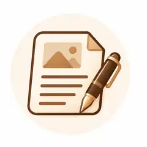

GEO Pass
Your machine-readable professional profile. A free first step, even without a website.
0 €
Details & pricing Three ways to strengthen your online presence. You choose where to begin and when to take the next step.
Your machine-readable professional profile. A free first step, even without a website.

An article of up to 500 words in an independent regional magazine, subject to editorial acceptance and your approval.
(All prices are net, excluding applicable VAT at the prevailing statutory rate.)

Your website belongs to you. No agency lock-in. No website-builder subscription.
(All prices are net, excluding applicable VAT at the prevailing statutory rate.)